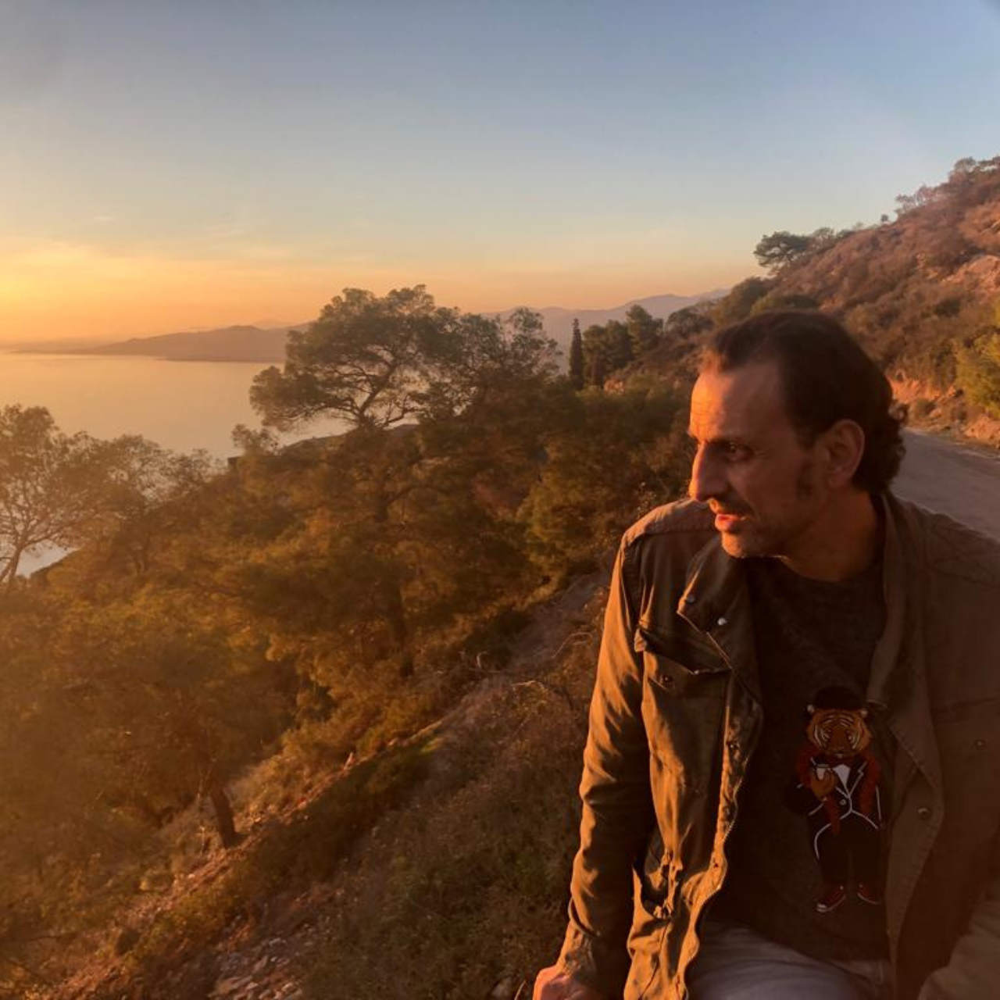

✦ Kael Solano — Série Littéraire
7 codes andins. 7 romans. Un voyage vers soi.
À travers les sagesses Q'ero des Andes, Thomas Mercier traverse sept épreuves initiatiques. Chaque tome est un code. Chaque code est une clé.
La Série
Chaque roman explore un code ancestral de la tradition inca — une sagesse transmise oralement depuis des siècles, mise en fiction pour la première fois.
Les Tomes
Les 7 tomes disponibles sur Amazon Kindle.
Tome I
L'Existence
DisponibleThomas Mercier part à la rencontre des Q'ero dans les Andes. Son premier code : apprendre à ressentir le souffle de la vie dans chaque être. Une initiation à l'énergie qui anime tout.
Lire sur Amazon →Tome II
La Vérité Choisie
DisponibleLe deuxième code confronte Thomas à la nature de la vérité. Quelle réalité choisissons-nous de vivre ? ANYA nous invite à questionner nos croyances les plus profondes.
Lire sur Amazon →Tome III
L'Amour Universel
DisponibleMUNAY — l'amour sans condition, sans frontière. Le troisième code emmène Thomas au cœur de ce que signifie aimer au-delà de soi.
Lire sur Amazon →Tome IV
Le Langage & la Symbolisation
DisponibleLe quatrième code révèle la puissance du langage et des symboles. Thomas découvre comment les mots et les signes façonnent notre réalité intérieure et extérieure.
Lire sur Amazon →Tome V
Le Savoir & l'Intégration
DisponibleLe cinquième code est celui du savoir intégré. YACHAY guide Thomas vers une sagesse vécue de l'intérieur, au-delà de toute connaissance intellectuelle.
Lire sur Amazon →Tome VI
La Réciprocité
DisponibleLe sixième code enseigne l'art du don et de la réciprocité. AYNI révèle à Thomas que l'équilibre du monde repose sur l'échange juste entre tous les êtres.
Lire sur Amazon →Tome VII
Le Temps & l'Espace Sacré
DisponibleLe septième et dernier code. KAUSAY PACHA emmène Thomas dans une compréhension profonde du temps et de l'espace sacré — l'aboutissement du chemin initiatique.
Lire sur Amazon →L'Auteur
Ces romans ne sont pas une fiction sur les Andes — ils sont une transmission de leur sagesse.
Kael Solano
Explorés à travers voyages, pratiques chamaniques et études des traditions Q'ero, les sept codes andins de Kael Solano forment un chemin vivant vers soi. Auteur de la série Le Chemin de l'Être, il transmet une sagesse ancestrale mise en fiction pour la première fois.

Tome III — MUNAY
Rejoignez les lecteurs du Chemin — Kael Solano vous envoie un fragment de MUNAY avant sa sortie officielle.
Je rejoins le CheminExtrait offert · Aucun engagement · Désabonnement libre